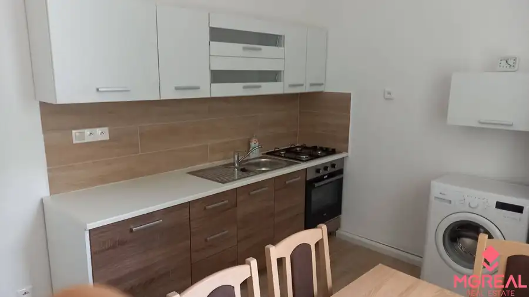
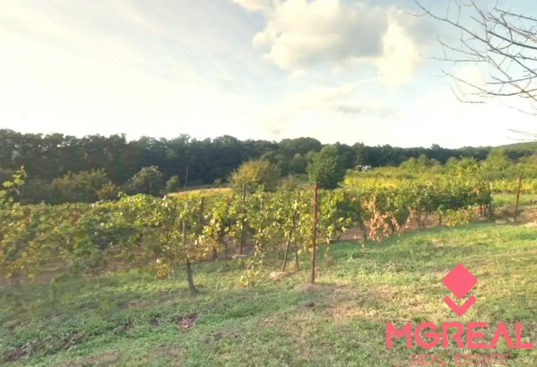

Poľnohospodársky areál Horné Obdokovce okres Topoľčany, rozsiahle poze
Horné Obdokovce
- Plocha5500 m²
- Stavpôvodný
- Vlastníctvoosobné
O nehnuteľnosti
Na predaj areál bývalého hospodárskeho dvora obec Horné Obdokovce – okres Topoľčany. Výmera celej užívanej plochy je 6,6 ha, z toho sú 4 ha vo vlastníctve predávajúceho a 2,6 ha v nájme. Budovy sú vysporiadané – vrátnica, vážnica, sýpka, 2x kravín, 2x ošipáreň, sklady, hala, administratívna budova. Voda z vlastného zdroja (studňa, vodáreň), elektrina z vonkajšej trafostanice, vzdušné NN vedenie. V územnom pláne sú pozemky z hľadiska funkcie zaradené do plochy výroby a skladov. Prípustné funkčné využívanie: poľnohospodárska výroba, vrátane živočíšnej výroby, remeselno-výrobné prevádzky, výrobné služby (napr. stavebníctvo) sklady a logistické zariadenia miestneho významu. Obmedzujúce funkčné využívanie (prípustné s obmedzením): príslušné verejné dopravné a technické vybavenie nevyhnutné pre obsluhu územia, agroturistika s prechodným ubytovaním návštevníkov do 5 lôžok, administratívne budovy využívané výrobnými podnikmi a inými podnikateľskými subjektmi. Zakazujúce funkčné využívanie (neprípustné): bývanie (okrem ubytovania zamestnancov), šport a rekreácia, priemyselná výroba s negatívnymi vplyvmi na životné prostredie. Cena (pozemky vo vlastníctve + budovy) 450.000,-Eur + DPH.
Parametre
| Rozloha pozemku | 40000 m² |
|---|---|
| Zastavaná plocha | 18000 m² |
| Úžitková plocha | 5500 m² |
| Poschodie | neuvedené |
| Počet poschodí | 1 |
| Vlastníctvo | osobné |
| Stav | pôvodný |
| El. napätie | nie |
| Plyn | nie |
| Kúpeľňa | nie |
| Vykurovanie | nie |
| Balkón | nie |
| Lódžia | nie |
| Terasa | nie |
| Pivnica | nie |
| Garáž | nie |
| Postavené z | Zmiešané |
| Krb | nie |
| Klimatizácia | nie |
| Káblová televízia | nie |
| Energetický certifikát | nie |
| Predzáhradka | nie |
| Dátum zverejnenia | 7. 9. 2025 |
Kde to je
Mohlo by Vás zaujímať

Byt9 145 000 €Predaj 1-izbový. byt, centrum - Párovce Nitra 1-izbový43 m²1. podlažie Na predaj veľkometrážny 1 izbový byt s balkónom v centre Nitry, Párovská ulica, výmera 43 m2. Nachádza sa na 1.poschodí v bytovom dome s výťahom. Byt…
Záhrady 14 900 €Vinica / Záhrada Pohranice 760 m2 Pohranice 760 m² Ponúkame vinicu / záhradu v obci Pohranice, výmera 760 m2, šírka pozemku 12-13 m, pozemok nebol dlhšie udržiavaný, lokalita - časť Čerhát. Pri…